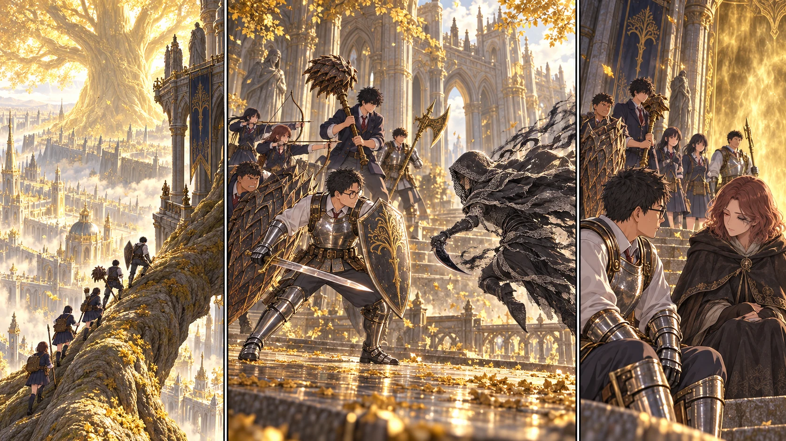

DAY73 / TURN1−83
王の眠らない城。

蓮「ゲームなら、の続きは……見てから言います」
【DAY73｜黄金樹の大聖堂】教会の湿った土の匂いが消えた。代わりに、冷えた石と古い香の匂いがする。大聖堂へ転移した十三人は、誰もすぐに歩き出さなかった。陽太がA隊、蓮がB隊を数え、最後に先生が頷く。自分の足で訪れ、解放した場所へ戻る。その手順が、長かった王都への道を一度だけ短くした。
黄金の幻影が立っていた床には、今は光の粒しかない。健太は盾を持ち直し、天井を見上げた。「まだ上か」。窓の外を、太い根が斜めに横切っていた。街を見下ろす高さにいるのに、黄金樹の幹はさらに上へ続く。ここまで来ても、入口の前なのだった。
先生は攻略サイト先読みを開いた。根を渡って上階へ。女王の閨、その先に王。短く書けば数行だが、欄の端にある「黒き刃」の四文字を飛ばさなかった。蓮もそこを見る。「ゲームなら……いや、今見えた範囲だと、あの曲がり角まで見通せない」。花と千夏は、前衛と重ならない立ち位置へ移った。
石の回廊には、指を読む老婆たちの亡骸があった。寝ているのではないと分かる静けさだった。誰がここまで追い立てたのか。答えを話し合う前に、先生が手を上げた。入口の陰で、細い刃がこちらを向いた。
【黒き刃の刺客｜2d6＝1・4、準備と連携＋5、合計10】刺客は、いちばん大きな盾へは来なかった。先生の脇を抜け、後ろの杖へ向かう。悠の肩が上がったとき、拓海が短い声を出した。「右、空ける」。先生が斜めに下がり、その通り道へ剣を置いた。追い回すのではなく、通せる場所を減らす。
花の一本目は外れた。黒い裾が矢の下を滑る。だが花が狙い直す間に、千夏の矢が反対側の足場を塞いだ。杖から放たれた青い光に進路を曲げた刺客を、健太が迎えた。竜爪の盾の向こうで刃が鳴る。ずっと受け続けない。一歩だけ支え、直人が入れる空間を作る。
大竜爪が石床へ落ちた。刺客の身が崩れ、大地の長い穂先が逃げる先を止める。十三人全員が殴りかかったわけではない。見ていた陸と蓮が、後ろから来る敵がいないことを最後まで確認した。誰も怪我をしていないと分かってから、悠がゆっくり息を吐いた。「今、逃げ道を教えてくれたの、助かった」。拓海は杖を下げる。「俺も怖かったから、先に見てた」。
女王の閨には、巨大な寝台があった。人の生活を想像するには大きすぎる。そこに残されていた祈祷「黄金樹の恵み」を、葵が包んだ。傷をゆっくり癒やす術だと先読みにはある。ただし必要な信仰は三十八。今の自分たちに、拾ったその場で使えるものではない。「持ち帰る価値はあります」。葵は、使えると言わずにそう言った。
部屋の祝福には触れなかった。位置を地図に写し、戻るための道とともに、救援用の未解放地点へ加える。大聖堂から運んだ食料と水をここへ置く。休息するなら通常の野営だ。空になった術の枠や、傷んだ武器が一晩で戻るわけではない。
【王へ続く階段】その先の金色の霧の手前に、召喚の印があった。印に触れて助力を願うのは、明日の突入時だ。その晩、見張りの交代に合わせるようにメリナが姿を見せた。先生は反射的に後ろの人数を数えた。彼女はその視線を追ってから言った。「私にも、ここを越える理由がある」。守ってもらうだけの同行者の声ではなかった。
「助けてくれるなら、頼みたい。ただ、君を一人で前へは出さない」。先生は配置を説明した。自分が最初に敵の注意を引き、左右から交代する。メリナは短く頷いた。「あなたも、一人で受け続けないで」。それ以上の約束は交わさない。この王の前では、互いに動いて確かめるしかなかった。
【同じ日の教会｜物資C隊 2d6＝3・1＋4＝8】教会では、二頭分の肉と二往復の水が運び込まれていた。航は良さそうな獣道を見つけたが、その先へ入らず、目印だけを記した。調達と探索は続ける。ただし、帰りを待つ人の目が届く範囲から広げる。結衣は、今日まだ聞いていない声を名簿に残した。王都の十三人の声は、ここまでは届かない。
夜、女王の閨の入口で蓮が交代を告げた。街のどこかで、遠く金属の音がした。皆が寝静まってからも、王はこの奥にいる。先生は持ち込んだ地図を閉じた。明日は、知っている攻撃が本当に見えるかどうかを、ここで試す。
今回の判定記録
| 判定 | 出目 | 補正 | 合計 |
|---|
| black-knife | 1+4 | 5 | 10 |
| C-supply | 3+1 | 4 | 8 |
抽選前の条件 · 抽選結果